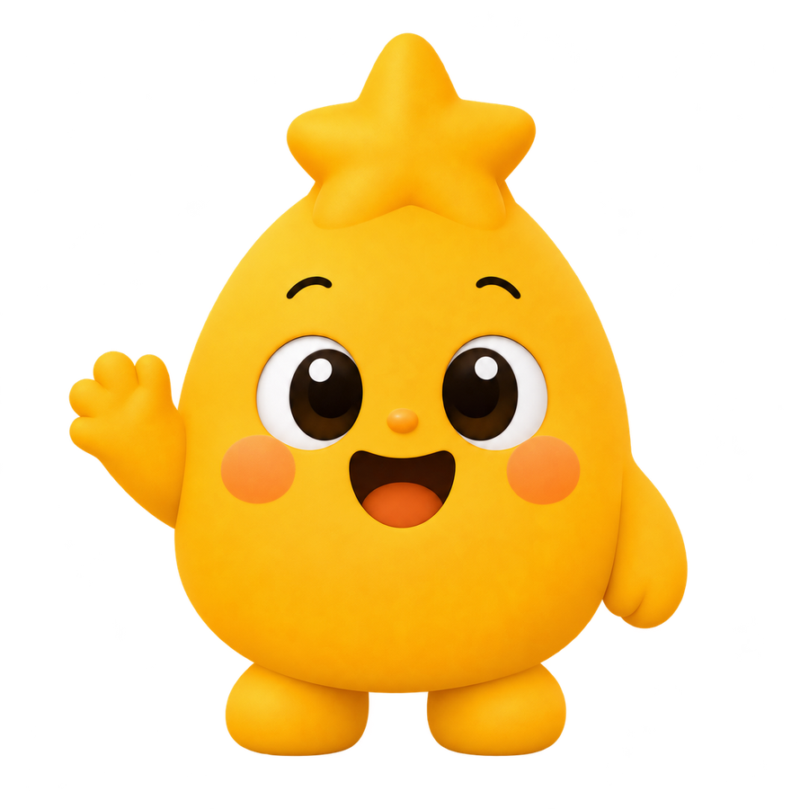
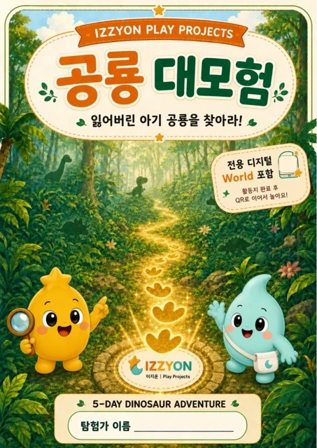
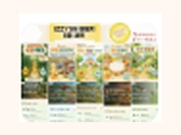
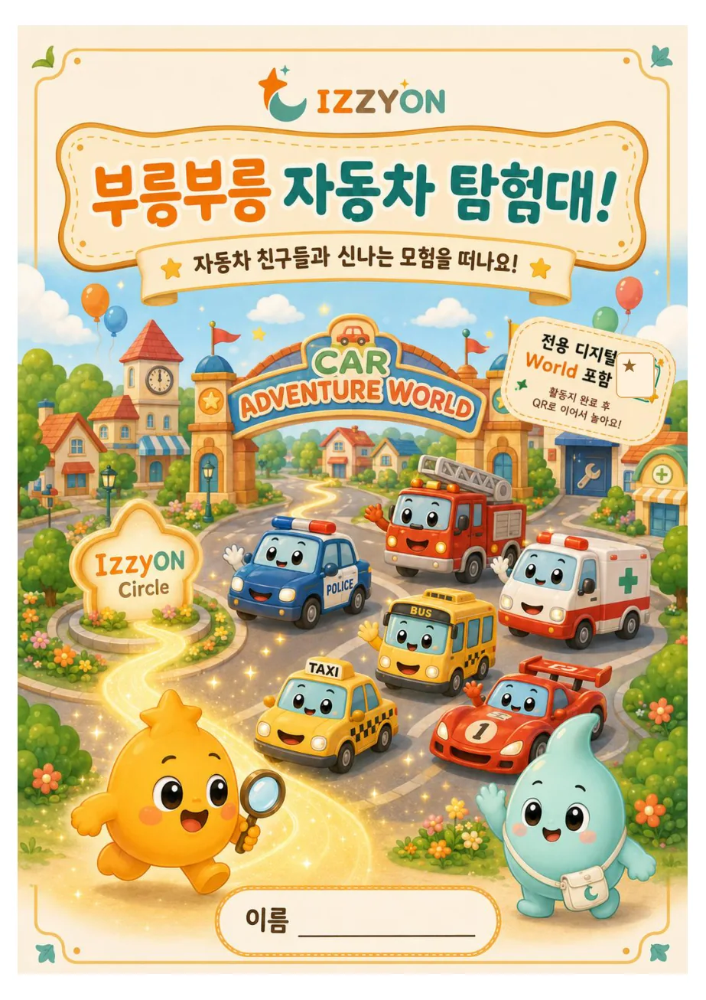
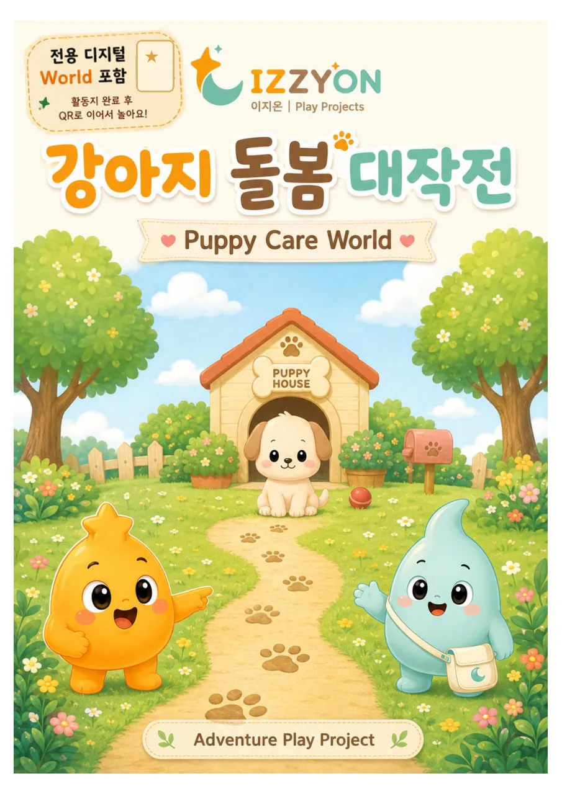
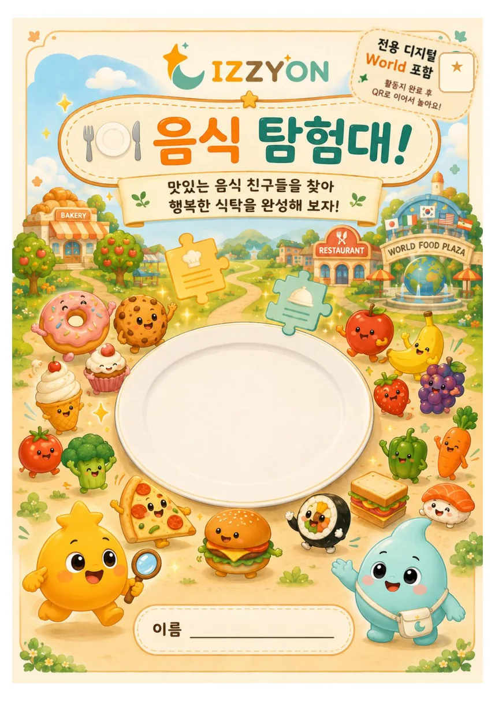
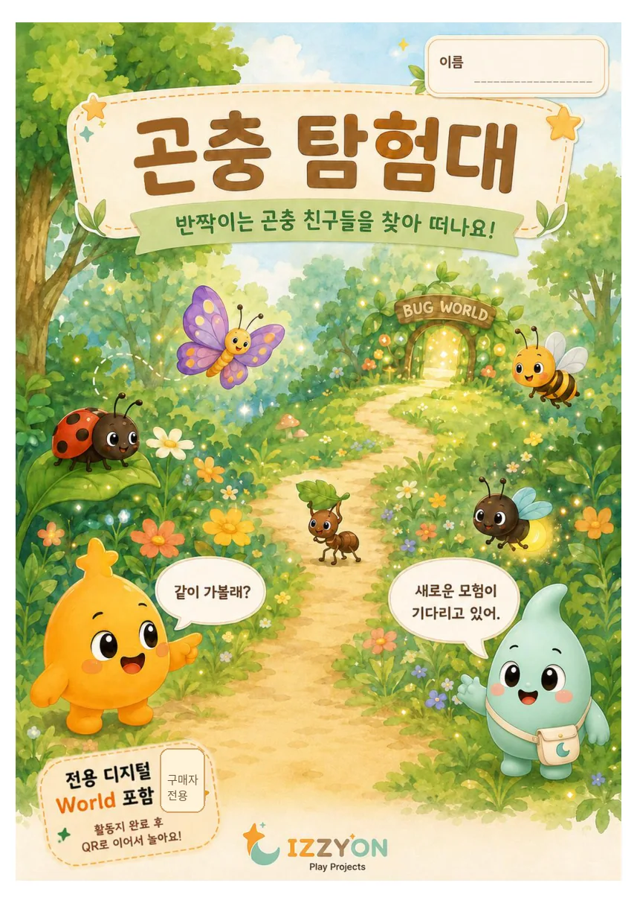
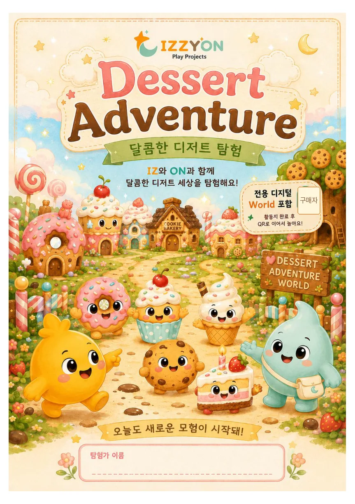
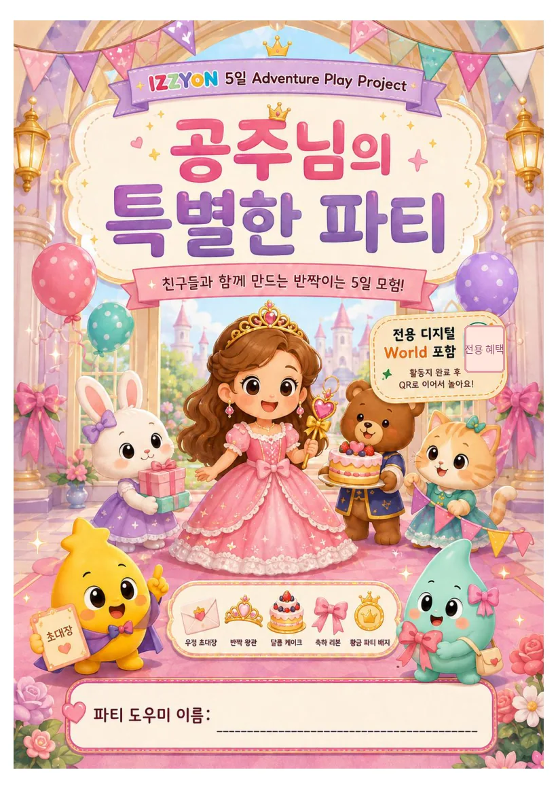
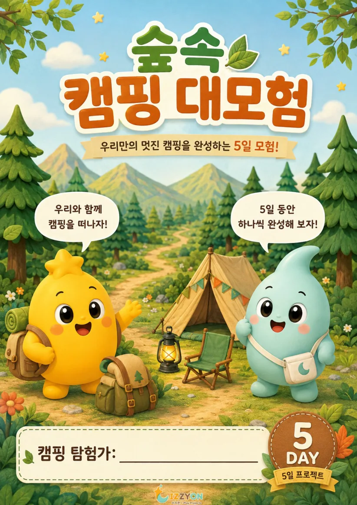

5-DAY STORY
✦ 작은 모험이 시작되는 곳 ✧
아이와 노는 시간을
더 쉽게.
오늘도 놀 준비 완료!준비는 짧게, 몰입은 길게.
한 장의 놀이에서 5일간 이어지는 이야기까지.
아이가 직접 발견하고, 선택하고, 만드는 우리만의 작은 모험을 만나보세요.
✳ 출력해서 시작하는 놀이✳ 아이가 모험의 주인공
IZZYON LITTLE ADVENTURE CLUB


✦ LET’S PLAY오늘의 모험을
열어봐!
열어봐!
IZ & ON · YOUR PLAY COMPANIONS
OUR PLAY PHILOSOPHY
매일의 놀이가 작은 모험이 되도록
보호자의 준비는 조금 더 가볍게, 아이가 주인공인 놀이로.
01 / EASY START✎필요한 페이지만
▤
필요한 페이지만
쏙, 골라서
오늘의 상황에 맞는 활동을 골라 출력하고 가볍게 시작해요.
02 / LITTLE DISCOVERIES✳아이 스스로
✻
아이 스스로
발견하고 선택하고
찾아보고, 그리고, 만들면서 아이가 직접 놀이를 이끌어요.
03 / CONNECTED STORIES✦하루하루 연결되는
✧
하루하루 연결되는
다섯 번의 모험
작은 미션들이 하나의 이야기로 이어져 완성의 기쁨을 남겨요.
THE 5-DAY ADVENTURE COLLECTION
다섯 날에 담은 하나의 이야기
여덟 가지 테마, 여덟 가지 모험. 오늘은 어디로 떠나볼까요?

ADVENTURE
✦ FIVE DAYS · ONE LITTLE STORY
공룡 대모험
잃어버린 아기 공룡을 찾아라!
이야기를 따라 하루씩 펼쳐지는 놀이. 테마를 골라 우리 아이만의 작은 여행을 시작해 보세요.
이 프로젝트 둘러보기실제 상품 PDF 표지

PLAY COLLECTION · 5 PROJECTS
모험을 묶어서 만나보세요
「5일 놀이 프로젝트 BEST 5종 세트」는 별도로 판매되는 묶음 상품입니다. 포함되는 정확한 프로젝트와 제공 조건은 크티 상세페이지에서 확인해 주세요.
5종 세트 구성 살펴보기 ↗CHOOSE YOUR ADVENTURE
어떤 모험이 기다리고 있을까요?
이야기 속으로 쏙 들어가는 5일 놀이 프로젝트 8종.
5-DAY STORY

5-DAY STORY

5-DAY STORY

5-DAY STORY

5-DAY STORY

5-DAY STORY

5-DAY STORY

✧ 오늘의 호기심이 내일의 이야기로 이어집니다 ✧
PICK YOUR PLAY
오늘은 어떤 놀이가 좋을까요?
하루의 기분과 시간에 맞게, 우리 가족의 방식으로 즐겨요.
FREE DIGITAL PLAY · IZZYON PLAYGROUND
✦ 학습지 구매 없이 누구나 무료
종이 밖에서도 이어지는
작은 퍼즐 모험
학습지를 구매하지 않아도 좋아요. IZZYON의 무료 퍼즐 놀이터에서 화면 속 문제를 하나씩 해결하며 놀아보세요.
✳ 구매 필요 없음✳ 휴대폰·PC로 접속✳ 바로가기 또는 QR 스캔
무료 퍼즐 놀이터 열기 ↗
이 놀이터는 누구나 공개적으로 이용하는 무료 사이트입니다. 공룡 프로젝트 구매자 전용 QR 놀이터와는 별개예요.
✦ IZZYONworld ✦
SCAN & PLAY카메라로 스캔하면 무료 퍼즐 놀이터로 이동해요.A LITTLE GIFT FOR YOU
작은 모험부터
무료로 시작해 볼까요?
공룡 대모험 DAY1 체험판이 별도 등록되어 있어요.
이용 조건과 현재 제공 여부는 크티에서 확인해 주세요.
무료 제공 상태와 다운로드 안내는 크티 상품 페이지에서 확인해 주세요.
FREE
EXPERIENCE ✦✦✳
EXPERIENCE ✦✦✳
MEET IZ & ON
모험을 함께하는 작은 친구들
아이의 답을 대신 찾지 않고, 아이가 주인공이 되도록 곁에서 도와요.
✦
DISCOVER & START
이즈 IZ
“이건 뭘까? 같이 찾아보자!”
발견과 시작을 제안하는 친구☾
GUIDE & SUPPORT
온 ON
“천천히 해도 괜찮아!”
힌트와 회상을 돕는 친구FOR EDUCATORS
우리 교실에도
이야기를 더해요.
구매한 교사는 본인 담당 학급에서 교육 목적으로 이용할 수 있어요. PDF 원본을 다른 교사나 기관에 공유·재배포하는 것은 금지됩니다.
교육기관 이용 안내 자세히 보기 →A LITTLE ADVENTURE STARTS HERE
오늘의 작은 놀이가
내일의 추억이 되도록.
이즈·온과 함께 우리 아이만의 다음 이야기를 만나보세요.
IZZYON 놀이 모두 만나보기 ↗